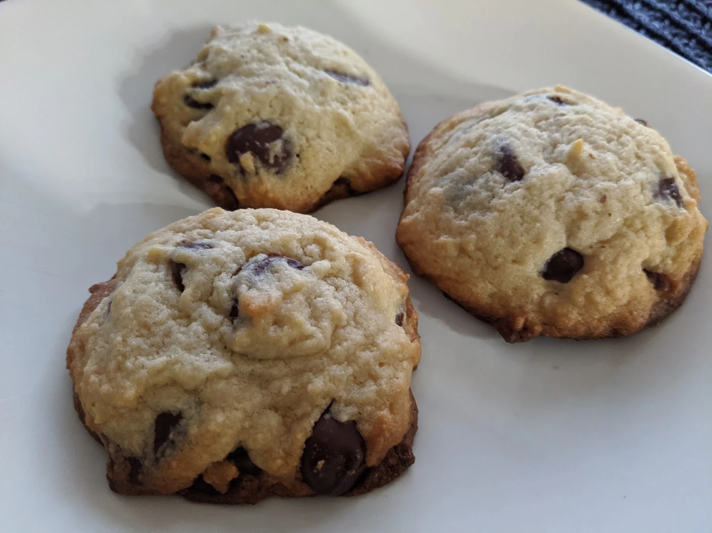

Chocolate Chip Cookies

- ⏲️ Prep time: 10 min
- 🍳Cook time: 10 min
- 🍽️ Servings: 4
Ingredients
- 230 g melted butter (2 sticks)
- 330 g bread flour
- 5 g salt
- 5 g baking soda
- 100-200 g white sugar
- 100-200 g brown sugar
- 1 egg
- 15 g milk
- 5 g vanilla
- 225 g 50-70% dark chocolate chips or semi-sweet milk chocolate chips
Directions
- Preheat oven to 375°F
- Mix the flour, baking soda, and salt in a bowl
- Using a mixer or whisk, beat the butter, sugar, eggs, and vanilla in a separate bowl for a few mins
- Combine and stir in the dry ingredients, then the chocolate chips
- Use an ice cream scooper or spoon to make uniform balls of cookie dough to the size you like and evenly space them out on a parchment paper lined baking sheet (you may need more than one sheet depending on the size of the cookies)
- Bake in the oven one baking sheet at a time for around 8-10 minutes, taking them out when they start to brown
- Cool for a few minutes then put them on a cooling rack
Contribution
- mfed3 - xmr:
48eEMdYtCQaV5wY7wvmxK6jCxKkia9dgpNTMNT1do7RLWXCwWDgSKjN3kiZ6yHbAuAXWgDGN6imnGT9NPeHWD7zX9hSyHu2